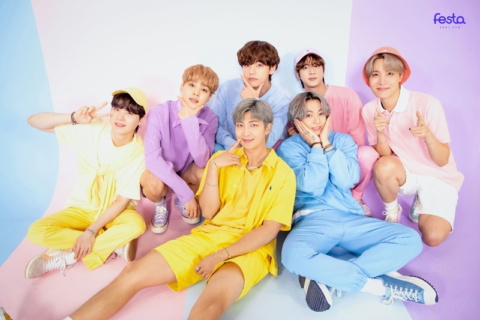
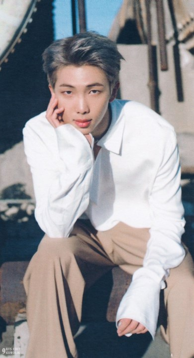
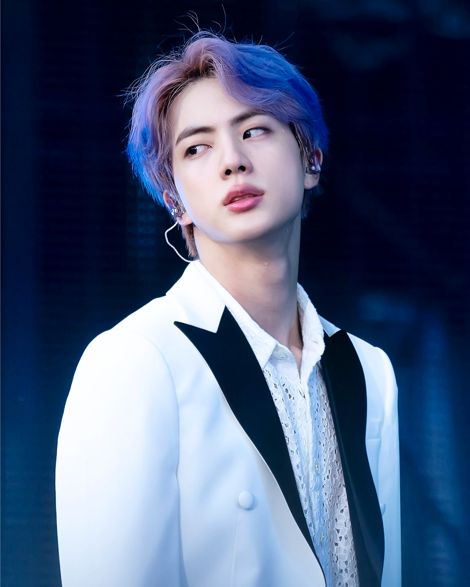
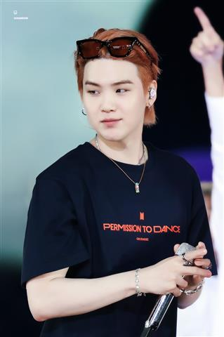
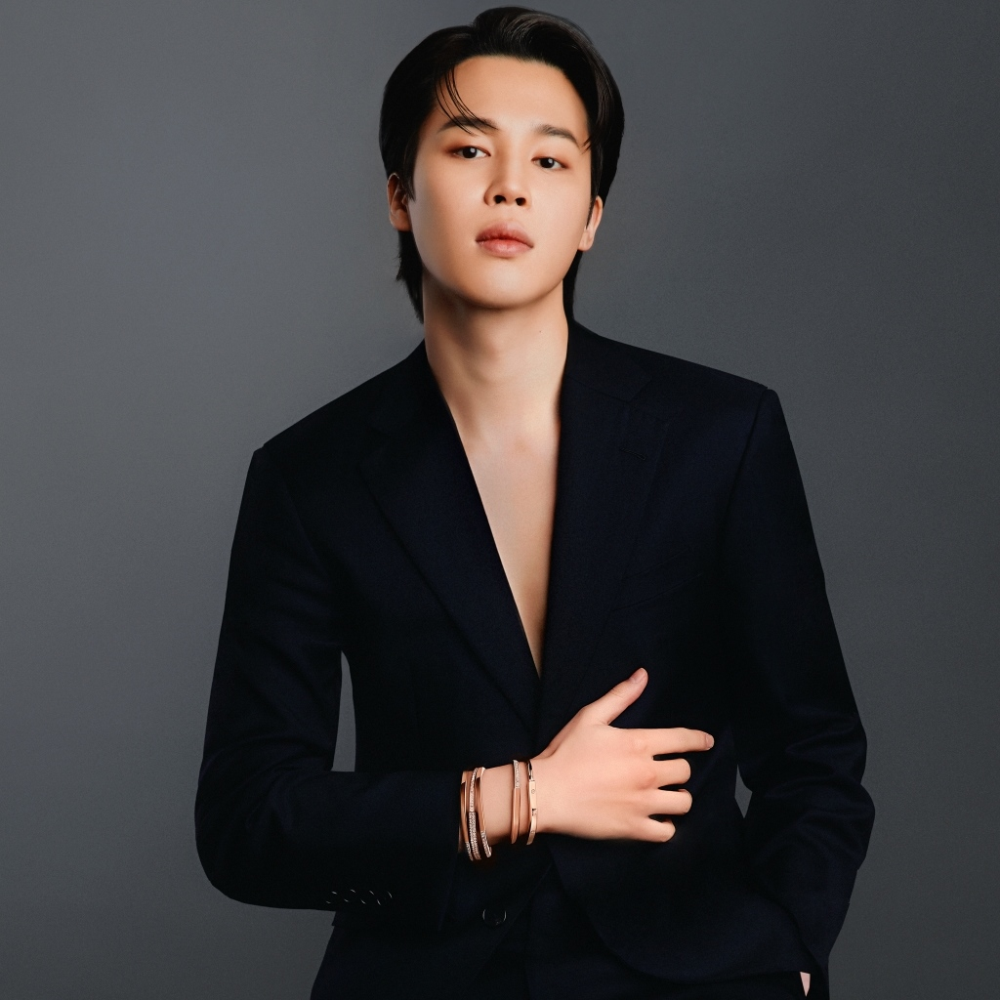
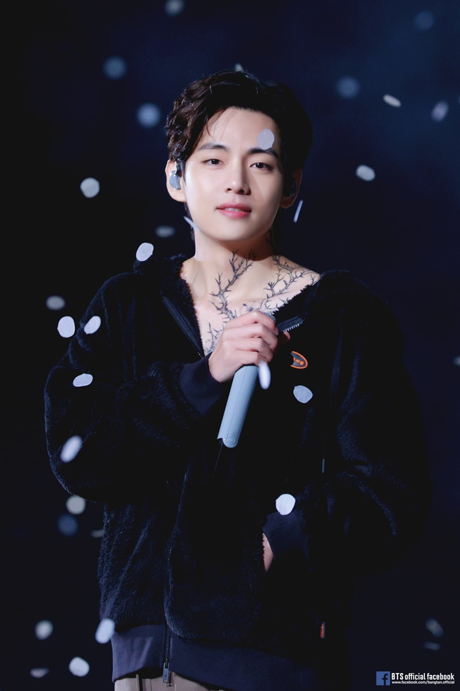
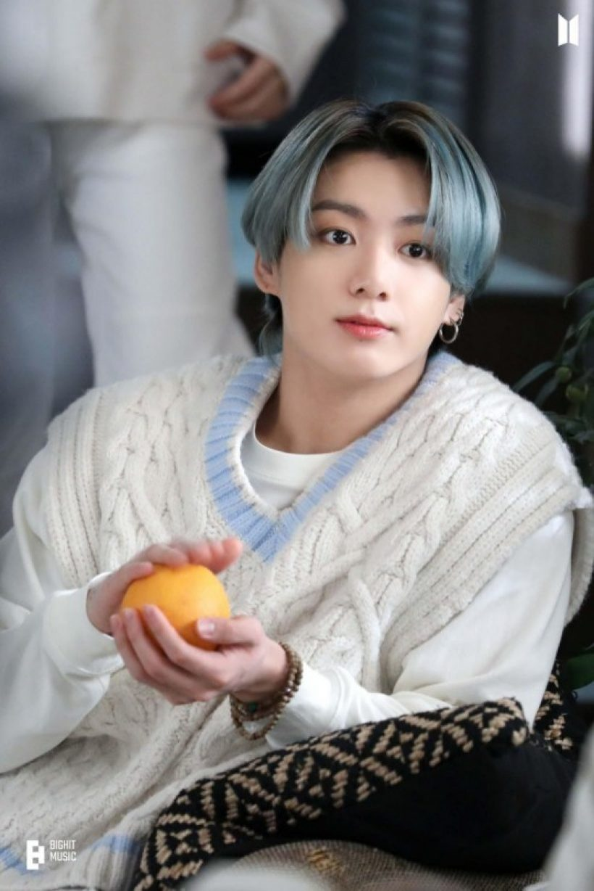

สวัสดีค่ะ ยินดีต้อนรับเข้าสู่เว็บ ON เป็นเว็บศิลปิล K-POP วง BTS หรือ วงบังทัน
บีทีเอส (เกาหลี: 방탄소년단; อาร์อาร์: Bangtan Sonyeondan; หรือ บังทันบอยส์ Bangtan Boys) เป็นบอยแบนด์เกาหลีใต้ ที่ก่อตั้งใน ค.ศ. 2010 และเปิดตัวใน ค.ศ. 2013 สังกัดบิกฮิตเอนเตอร์เทนเมนต์ ประกอบด้วยสมาชิกเจ็ดคนคือ จิน, ชูกา, เจ-โฮป, อาร์เอ็ม, จีมิน, วี และจ็องกุก สมาชิกของวงร่วมเขียนและร่วมผลิตตามตัวตนของพวกเขา โดยดั้งเดิมเป็นวงฮิปฮอป แนวเพลงของพวกเขาค่อย ๆ พัฒนาให้เข้ากับแนวเพลงหลากหลายแนว เนื้อเพลงมักพูดถึงสุขภาพทางจิต, ปัญหาของวัยเยาว์–นักเรียนและการก้าวผ่านวัย, ความสูญเสีย, การเดินทางสู่การรักตนเอง และการแยกอยู่ตัวคนเดียว (individualism) ผลงานพวกของเขายังอ้างอิงถึงวรรณกรรม, ปรัชญา, แนวคิดทางจิตวิทยา รวมถึงเนื้อเรื่องเกี่ยวกับจักรวาลคู่ขนานอยู่บ่อยครั้ง

1. RM (อาร์เอ็ม)
ชื่อในวงการ : RM (ย่อมาจาก Real Me)
ชื่อจริง : คิมนัมจุน (Kim Nam Joon)
วันเกิด : 12 กันยายน 1994
ตำแหน่งในวง : ลีดเดอร์ และแรปเปอร์
ผลงานที่ผ่านมา : ผลงานของ RM ที่ผ่านมา มีทั้งการเขียนเนื้อเพลง และแต่งเพลงเกือบทุกเพลงของวง ออกอัลบั้มมิกซ์เทปของตัวเองถึง 2 อัลบั้ม เป็นแขกรับเชิญในเพลงของนักร้องหลายคน และร้องเพลงประกอบภาพยนตร์เรื่อง Fantastic Four ร่วมกับ Mandy Ventrice
อื่น ๆ : เคยใช้ชื่อในวงการว่า Rap Monster นัมจุนมีน้องสาว 1 คน เขาจบการศึกษาจากโรงเรียนมัธยมปลายอัพกูจอง (Apgujeong High School) ด้วยเกรดที่ยอดเยี่ยม และทำคะแนนสอบ TOEIC ได้คะแนนสูงมากเพราะเคยไปเรียนที่ประเทศนิวซีแลนด์เป็นเวลา 6 เดือน นัมจุนมีไอคิวสูงถึง 148 ติดอันดับท็อป 3 ในการสอบเข้าเรียนต่อในระดับปริญญาตรี จนได้รับเลือกให้ศึกษาในมหาวิทยาลัยไซเบอร์แห่งเกาหลี (Global Cyber University) ซึ่งเป็นการเรียนออนไลน์ และปริญญาโทที่มหาวิทยาลัยไซเบอร์ฮันยาง (Hanyang Cyber University) สาขาสื่อโฆษณา (Advertising Media) นัมจุนเริ่มมีความสนใจในดนตรีฮิปฮอปตั้งแต่ยังเป็นเด็ก โดยเริ่มฟังและหัดแต่งเพลงเอง จนได้มาเป็นแรปเปอร์ใต้ดินชื่อ รันช์แรนดา (Runch Randa) ต่อมาก็ได้เซ็นสัญญาเป็นเด็กฝึกของค่าย และฝึกฝนเป็นระยะเวลา 3 ปี จนได้เดบิวต์เป็นวง BTS ในที่สุด

2. Jin (จิน)
ชื่อในวงการ : Jin (จิน)
ชื่อจริง : คิมซอกจิน (Kim Seok Jin)
วันเกิด : 4 ธันวาคม 1992
ตำแหน่งในวง : ร้องเสริม, ภาพลักษณ์ของวง และพี่ใหญ่
ผลงานที่ผ่านมา : เขียนเนื้อเพลง และแต่งทำนองเพลงเกือบทุกเพลงของวง, เพลงเดี่ยวของตัวเองในอัลบั้ม, แต่งเพลงประกอบซีรีส์เรื่อง Hwarang ชื่อว่า It’s Definitely You ร่วมกับ V, เล่น MV เพลง I’m Da One ของ Jo Kwon ในปี 2012 และเป็นแขกรับเชิญในรายการวาไรตี้ยอดนิยมมากมาย
อื่น ๆ : จินมีพี่ชาย 1 คน เขาจบการศึกษาที่มหาวิทยาลัยคอนกุก (Konkuk University) เอกศิลปะและการแสดง และได้เข้าเรียนออนไลน์ที่มหาวิทยาลัยไซเบอร์ฮันยาง (Hanyang Cyber University) สาขาสื่อโฆษณา (Advertising Media) จินเข้าสังกัด Big Hit Entertainment ในฐานะเด็กฝึกทางการแสดง และต่อมาได้กลายมาเป็นศิลปินฝึกหัด จนได้เดบิวต์เป็นศิลปินเต็มตัว

3. Suga (ชูก้า)
ชื่อในวงการ : Suga (ชูก้า) และ Agust-D (อากัส-ดี)
ชื่อจริง : มินยุนกิ (Min Yoon Gi)
วันเกิด : 9 มีนาคม 1993
ตำแหน่งในวง : แรปเปอร์
ผลงานที่ผ่านมา : เขียนเนื้อเพลง และแต่งเพลงเกือบทุกเพลงของวง ออกอัลบั้มมิกซ์เทปของตัวเองถึง 2 อัลบั้ม ได้รับรางวัล MelOn Music Awards: Hot Trend ในฐานะโปรดิวเซอร์เพลง Wine ของ SURAN feat. Changmo (2017) และเป็นแขกรับเชิญในเพลงของนักร้องหลายคน เล่น MV เพลง I’m Da One ของ Jo Kwon ในปี 2012
อื่น ๆ : ชูก้ามีพี่ชาย 1 คน เขาจบการศึกษาจากโรงเรียนมัธยมปลายอัพกูจอง (Apgujeong High School) จากนั้นเข้าเรียนต่อระดับปริญญาตรีที่มหาวิทยาลัยไซเบอร์แห่งเกาหลี (Global Cyber University) สาขาการออกอากาศและความบันเทิง (Broadcasting and Entertainment) และปริญญาโทที่มหาวิทยาลัยไซเบอร์ฮันยาง (Hanyang Cyber University) สาขาสื่อโฆษณา (Advertising Media) ชูก้ามีความสนใจการแรปและการแต่งเพลงตั้งแต่สมัยมัธยม โดยเคยเป็นแรปเปอร์ใต้ดิน ใช้ชื่อว่า Gloss และเป็นส่วนหนึ่งของทีมฮิปฮอป D-Town ในช่วงปี 2010 ก่อนที่จะมาได้เดบิวต์เป็นสมาชิกของวง BTS

4. J-Hope (เจโฮป)
ชื่อในวงการ : J-Hope (เจโฮป)
ชื่อจริง : จองโฮซอก (Jung Ho Seok)
วันเกิด : 18 กุมภาพันธ์ 1994
ตำแหน่งในวง : เต้นหลัก, แรปเปอร์ และร้องเสริม
ผลงานที่ผ่านมา : เขียนเนื้อเพลง แต่งเพลงส่วนใหญ่ และออกแบบท่าเต้นของวง ออกอัลบั้มมิกซ์เทป มีซิงเกิลเดี่ยวที่ได้อันดับ Top 100 บนบิลบอร์ดชาร์ตของสหรัฐฯ และเป็นแขกรับเชิญในเพลงของนักร้องหลายคน
อื่น ๆ : เจโฮปมีพี่สาว 1 คน เขาจบการศึกษาจากโรงเรียนมัธยมปลายกวางจู (Gwangju Global High School) มหาวิทยาลัยไซเบอร์แห่งเกาหลี (Global Cyber University) สาขาวิชาวิทยุกระจายเสียง วิทยุโทรทัศน์ และสื่อบันเทิง (Broadcasting and Entertainment) และปริญญาโทที่มหาวิทยาลัยไซเบอร์ฮันยาง (Hanyang Cyber University) สาขาสื่อโฆษณา (Advertising Media) เจโฮปมีพรสวรรค์ทางการเต้นมาก เคยเข้าทีมสตรีตแดนซ์ NEURON และเข้าแข่งขันเต้นมาแล้วหลายรายการ จนได้เข้ามาเป็นเด็กฝึกที่ค่าย Big Hit และได้เป็นสมาชิกคนที่ 3 ที่ได้เข้าร่วมเดบิวต์เป็นวง BTS (ต่อจาก RM และ Suga)
5. Jimin (จีมิน)
ชื่อในวงการ : Jimin (จีมิน)
ชื่อจริง : ปาร์คจีมิน (Park Ji Min)
วันเกิด : 13 ตุลาคม 1995
ตำแหน่งในวง : เต้นหลัก และร้องนำ
ผลงานที่ผ่านมา : เขียนเพลงส่วนใหญ่ของวง และเพลงเดี่ยวของตัวเองในอัลบั้ม
อื่น ๆ : จีมินมีน้องชาย 1 คน เขาเคยศึกษาระดับมัธยมปลายที่โรงเรียนศิลปะปูซาน (Busan High School of Arts) จากนั้นก็ได้ย้ายไปเรียนที่โรงเรียนมัธยมศิลปะเกาหลี (Korea Arts High School) และเข้าเรียนต่อระดับปริญญาตรีที่มหาวิทยาลัยไซเบอร์แห่งเกาหลี (Global Cyber University) สาขาวิชาวิทยุกระจายเสียง วิทยุโทรทัศน์ และสื่อบันเทิง (Broadcasting and Entertainment) และปริญญาโทที่มหาวิทยาลัยไซเบอร์ฮันยาง (Hanyang Cyber University) สาขาสื่อโฆษณา (Advertising Media) ตั้งแต่สมัยเรียน จีมินเป็นเด็กที่โดดเด่นในเรื่องการเต้น ทำให้ครูสอนเต้นแนะนำให้เขาไปเข้ารับการทดสอบความสามารถหรือออดิชั่น จนได้เป็นนักร้องฝึกหัดของค่าย Big Hit และได้ผ่านการคัดเลือกเข้าเป็นสมาชิกวง BTS เป็นคนสุดท้าย

6. V (วี)
ชื่อในวงการ : V (วี)
ชื่อจริง : คิมแทฮยอง (Kim Tae Hyung)
วันเกิด : 30 ธันวาคม 1995
ตำแหน่งในวง : ร้องเสริม, เต้นนำ และภาพลักษณ์ของวง
ผลงานที่ผ่านมา : เขียนเพลงส่วนใหญ่ในวง ออกซิงเกิลเพลงเดี่ยว เคยเล่น MV เพลง I’m Da One ของ Jo Kwon เดบิวต์เป็นนักแสดงซีรีส์ครั้งแรกในเรื่อง Hwarang: The Poet Warrior Youth และร้องเพลงประกอบซีรีส์ดังอย่าง Hwarang และ Iteawon Class
อื่น ๆ : วีเป็นพี่คนโตในบรรดาพี่น้อง 3 คน เขาจบจากโรงเรียนมัธยมศิลปะเกาหลี (Korea Arts High School) จากนั้นเข้าศึกษาในระดับปริญญาตรีที่มหาวิทยาลัยไซเบอร์แห่งเกาหลี (Global Cyber University) สาขาวิชาวิทยุกระจายเสียง วิทยุโทรทัศน์ และสื่อบันเทิง (Broadcasting and Entertainment) และปริญญาโทที่มหาวิทยาลัยไซเบอร์ฮันยาง (Hanyang Cyber University) สาขาสื่อโฆษณา (Advertising Media) วีมีความชื่นชอบในดนตรีและการร้องเพลงตั้งแต่สมัยประถม เขาเคยเรียนแซกโซโฟนในช่วงมัธยมต้น เพื่อเป็นแนวทางในการประกอบอาชีพ และในช่วงมัธยมปลายก็เริ่มเรียนเต้น จนได้เข้าคัดเลือกและผ่านการออดิชั่นของค่าย จนได้เข้ามาเป็นสมาชิกของวง BTS

7. Jungkook (จองกุก)
ชื่อในวงการ : Jungkook (จองกุก) และ Kookie (กุกกี้)
ชื่อจริง : จอนจองกุก (Jeon Jung Kook)
วันเกิด : 1 กันยายน 1997
ตำแหน่งในวง : ร้องหลัก, เต้น, แรปเปอร์, เซ็นเตอร์ และน้องเล็กของวง
ผลงานที่ผ่านมา : เขียนและโปรดิวซ์เพลงส่วนใหญ่ของวง เคยเล่น MV เพลง I’m Da One ของ Jo Kwon และเป็นแขกรับเชิญในรายการวาไรตี้ยอดนิยมมากมาย
อื่น ๆ : จองกุกมีพี่ชาย 1 คน เขาจบการศึกษาระดับมัธยมปลายที่โรงเรียนศิลปะการแสดงแห่งกรุงโซล (School of Performing Arts Seoul) และเข้าเรียนต่อในระดับปริญญาตรีที่มหาวิทยาลัยไซเบอร์แห่งเกาหลี (Global Cyber University) สาขาวิชาวิทยุกระจายเสียง วิทยุโทรทัศน์ และสื่อบันเทิง (Broadcasting and Entertainment) จองกุกเคยเข้าร่วมออดิชั่นในรายการต่าง ๆ มากมาย และมีหลายค่ายติดต่อมา แต่สุดท้ายเขาก็เลือกเซ็นสัญญาเป็นเด็กฝึกกับค่าย Big Hit จนกระทั่งได้เดบิวต์อย่างเป็นทางการในขณะที่อายุเพียง 15 ปีเท่านั้น และจากความสามารถรอบด้านของจองกุก ทั้งร้อง, เต้น และแรป ทำให้ได้รับฉายาว่า "มักเน่ทองคำ"

นางสาวญาณัจฉรา ฟองลอย ชื่อเล่น ปรางทิพย์
นางสาวอิทธิพร ขัดสี ชื่อเล่น ออนๆ
นางสาวอภิญญา เรณูแย้ม ชื่อเล่น ผักบุ้ง
นางสาวบัณฑิตา สุริยะ ชื่อเล่น อีฟ
นางสาวปภาสรณ์ แสนชัย ชื่อเล่น มิลค์
นางสาวอาณดา แก้วประพันธ์ ชื่อเล่น ขิมมี่